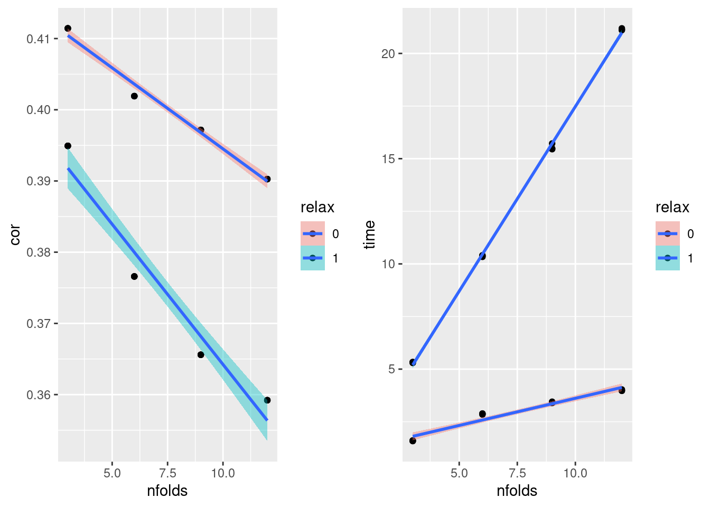
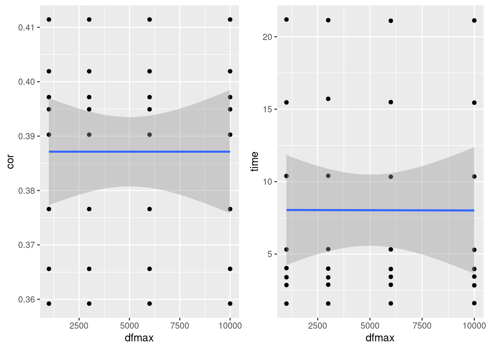
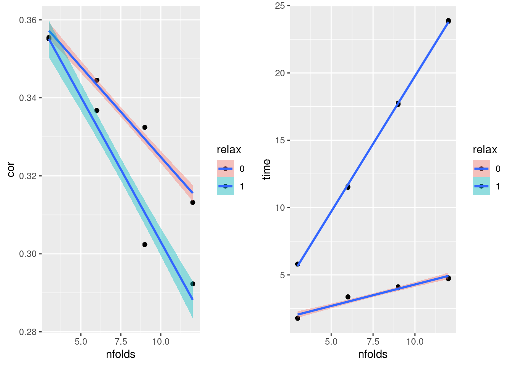
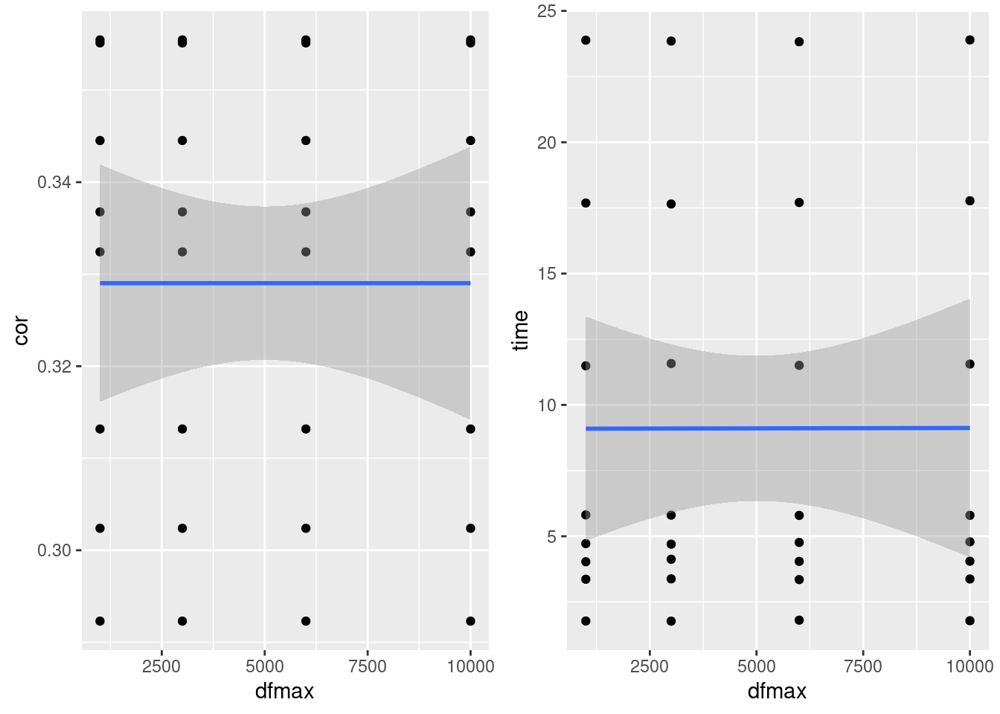
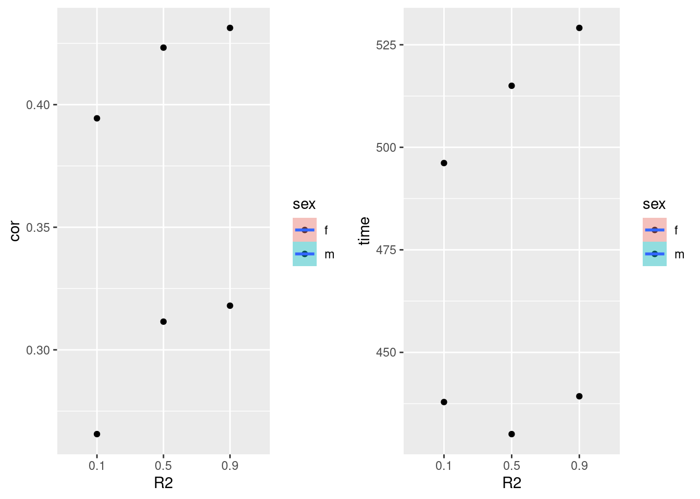
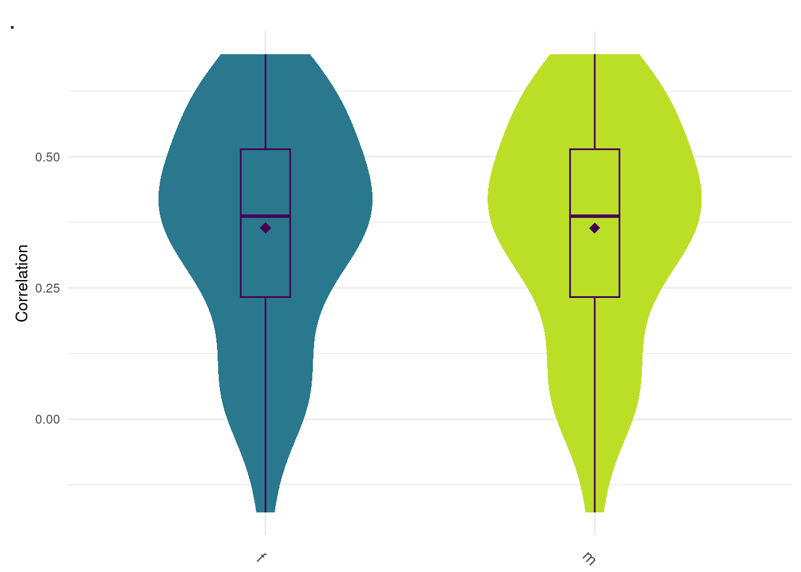

Last updated: 2023-08-03
Checks: 6 1
Knit directory: dgrp-starve/
This reproducible R Markdown analysis was created with workflowr (version 1.7.0). The Checks tab describes the reproducibility checks that were applied when the results were created. The Past versions tab lists the development history.
Great! Since the R Markdown file has been committed to the Git repository, you know the exact version of the code that produced these results.
Great job! The global environment was empty. Objects defined in the global environment can affect the analysis in your R Markdown file in unknown ways. For reproduciblity it’s best to always run the code in an empty environment.
The command set.seed(20221101) was run prior to running the code in the R Markdown file. Setting a seed ensures that any results that rely on randomness, e.g. subsampling or permutations, are reproducible.
Great job! Recording the operating system, R version, and package versions is critical for reproducibility.
Nice! There were no cached chunks for this analysis, so you can be confident that you successfully produced the results during this run.
Using absolute paths to the files within your workflowr project makes it difficult for you and others to run your code on a different machine. Change the absolute path(s) below to the suggested relative path(s) to make your code more reproducible.
| absolute | relative |
|---|---|
| /data2/morgante_lab/nklimko/rep/dgrp-starve/ | . |
Great! You are using Git for version control. Tracking code development and connecting the code version to the results is critical for reproducibility.
The results in this page were generated with repository version 6eac9d1. See the Past versions tab to see a history of the changes made to the R Markdown and HTML files.
Note that you need to be careful to ensure that all relevant files for the analysis have been committed to Git prior to generating the results (you can use wflow_publish or wflow_git_commit). workflowr only checks the R Markdown file, but you know if there are other scripts or data files that it depends on. Below is the status of the Git repository when the results were generated:
Ignored files:
Ignored: code/snake/
Ignored: data/snake/
Ignored: junk/
Ignored: notes/
Untracked files:
Untracked: .snakemake/
Untracked: Rplot.pdf
Untracked: analysis/linearReg.Rmd
Untracked: bglr-f.R
Untracked: code/PCA/
Untracked: code/data-prep/
Untracked: code/fabio/
Untracked: code/gBayesC.R
Untracked: code/id_bank_creation.R
Untracked: code/intro-starve/
Untracked: code/methodComp/
Untracked: code/regress/
Untracked: colorCode
Untracked: data/bayesF.rds
Untracked: data/bayesM.rds
Untracked: data/bglr-f-130k.rds
Untracked: data/bglr-f.rds
Untracked: data/bglr-m-130k.rds
Untracked: data/bglr-m.rds
Untracked: data/corLoop-f-minus.rds
Untracked: data/corLoop-f.rds
Untracked: data/corLoop-m-Minus.rds
Untracked: data/corLoop-m-minus.rds
Untracked: data/corLoop-m.rds
Untracked: data/fRegress.txt
Untracked: data/fRegress_adj.txt
Untracked: data/fm.burglar
Untracked: data/gbayesC-f.Rds
Untracked: data/gbayesC-m.Rds
Untracked: data/gbayesC.Rds
Untracked: data/gbayes_100k-f.Rds
Untracked: data/gbayes_100k-m.Rds
Untracked: data/goGroups.txt
Untracked: data/id_bank
Untracked: data/id_bank.Rds
Untracked: data/mPart.txt
Untracked: data/mRegress.txt
Untracked: data/mRegress_adj.txt
Untracked: data/multiReg.rData
Untracked: data/pheno_f
Untracked: data/pheno_m
Untracked: data/starve-f.txt
Untracked: data/starve-m.txt
Untracked: data/xp-f.txt
Untracked: data/xp-m.txt
Untracked: data/xp_f
Untracked: data/xp_m
Untracked: data/y_save.txt
Untracked: f-cor.png
Untracked: figure/
Untracked: m-cor.png
Untracked: posterPlots.R
Untracked: runtime.png
Untracked: snake/
Unstaged changes:
Modified: .Rprofile
Modified: .gitattributes
Modified: .gitignore
Modified: README.md
Modified: _workflowr.yml
Modified: analysis/_site.yml
Modified: analysis/about.Rmd
Deleted: analysis/gremlo.R
Modified: analysis/license.Rmd
Modified: analysis/linReg.Rmd
Deleted: analysis/methodComp-f.Rmd
Deleted: analysis/methodComp-m.Rmd
Modified: analysis/methodComp.Rmd
Modified: analysis/methodPred.Rmd
Modified: analysis/multiComp.Rmd
Modified: analysis/multiReg.Rmd
Modified: analysis/pca.Rmd
Modified: analysis/predict.Rmd
Modified: analysis/recap.Rmd
Modified: analysis/rewrite.Rmd
Modified: analysis/starve.Rmd
Deleted: analysis/stepwise-f.Rmd
Deleted: analysis/stepwise-m.Rmd
Deleted: analysis/testing.R
Deleted: analysis/tips.Rmd
Modified: analysis/top3.Rmd
Modified: analysis/trace.Rmd
Modified: code/README.md
Deleted: code/baseScript-lineComp.R
Deleted: code/combineSNP.R
Deleted: code/four-comp.76979.err
Deleted: code/four-comp.76979.out
Deleted: code/four-comp.sbatch
Deleted: code/fourLinePrep.R
Deleted: code/line_avgMinus.R
Deleted: code/line_avgPlus.R
Deleted: code/line_difMinus.R
Deleted: code/line_difPlus.R
Deleted: code/snpGene.R
Deleted: code/starveDataPrep.R
Modified: data/README.md
Modified: data/avgMinus-result.txt
Modified: data/avgMinus.txt
Modified: data/avgPlus-result.txt
Modified: data/avgPlus.txt
Modified: data/difMinus-result.txt
Modified: data/difMinus.txt
Modified: data/difPlus-result.txt
Modified: data/difPlus.txt
Modified: data/geneHits.txt
Modified: data/snpList.txt
Modified: data/starve.csv
Modified: dgrp-starve.Rproj
Modified: output/README.md
Modified: output/avgMinus-result.txt
Modified: output/avgPlus-result.txt
Modified: output/difMinus-result.txt
Modified: output/difPlus-result.txt
Note that any generated files, e.g. HTML, png, CSS, etc., are not included in this status report because it is ok for generated content to have uncommitted changes.
These are the previous versions of the repository in which changes were made to the R Markdown (analysis/lasso-OP.Rmd) and HTML (docs/lasso-OP.html) files. If you’ve configured a remote Git repository (see ?wflow_git_remote), click on the hyperlinks in the table below to view the files as they were in that past version.
| File | Version | Author | Date | Message |
|---|---|---|---|---|
| html | 6eac9d1 | nklimko | 2023-08-03 | Build site. |
| Rmd | 7478599 | nklimko | 2023-08-03 | wflow_publish(“analysis/lasso-OP.Rmd”) |
| html | af8605c | nklimko | 2023-08-03 | Build site. |
| Rmd | c80a623 | nklimko | 2023-08-03 | wflow_publish(“analysis/lasso-OP.Rmd”) |
| html | cfd86f2 | nklimko | 2023-08-03 | Build site. |
| Rmd | eb360fe | nklimko | 2023-08-03 | wflow_publish(“analysis/lasso-OP.Rmd”) |
| html | 29ae1fb | nklimko | 2023-08-03 | Build site. |
| Rmd | 78e5d03 | nklimko | 2023-08-03 | wflow_publish(“analysis/lasso-OP.Rmd”) |
| html | ed3b988 | nklimko | 2023-08-03 | Build site. |
| Rmd | b4c5ec0 | nklimko | 2023-08-03 | lasso opt page |
f <- readRDS("snake/data/zigure/lassoF.Rds")
m <- readRDS("snake/data/zigure/lassoM.Rds")
data <- f
gg[[1]] <- ggplot(data, aes(x=nfolds, y=cor, fill=relax)) +
geom_point() +
geom_smooth(formula = y ~ x, method=lm)
gg[[2]] <- ggplot(data, aes(x=nfolds, y=time, fill=relax)) +
geom_point() +
geom_smooth(formula = y ~ x, method=lm)
gg[[3]] <- ggplot(data, aes(x=dfmax, y=cor)) +
geom_point() +
geom_smooth(formula = y ~ x, method=lm)
gg[[4]] <- ggplot(data, aes(x=dfmax, y=time)) +
geom_point() +
geom_smooth(formula = y ~ x, method=lm)
data <- m
gg[[5]] <- ggplot(data, aes(x=nfolds, y=cor, fill=relax)) +
geom_point() +
geom_smooth(formula = y ~ x, method=lm)
gg[[6]] <- ggplot(data, aes(x=nfolds, y=time, fill=relax)) +
geom_point() +
geom_smooth(formula = y ~ x, method=lm)
gg[[7]] <- ggplot(data, aes(x=dfmax, y=cor)) +
geom_point() +
geom_smooth(formula = y ~ x, method=lm)
gg[[8]] <- ggplot(data, aes(x=dfmax, y=time)) +
geom_point() +
geom_smooth(formula = y ~ x, method=lm) plot_grid(gg[[1]],gg[[2]], ncol=2)
| Version | Author | Date |
|---|---|---|
| 29ae1fb | nklimko | 2023-08-03 |
plot_grid(gg[[3]],gg[[4]], ncol=2)
| Version | Author | Date |
|---|---|---|
| 29ae1fb | nklimko | 2023-08-03 |
plot_grid(gg[[5]],gg[[6]], ncol=2)
| Version | Author | Date |
|---|---|---|
| 29ae1fb | nklimko | 2023-08-03 |
plot_grid(gg[[7]],gg[[8]], ncol=2)
| Version | Author | Date |
|---|---|---|
| 29ae1fb | nklimko | 2023-08-03 |
lassoFinal <- readRDS("snake/data/zigure/lassoFinal.Rds")
print(lassoFinal) method nfolds dfmax relax sex cor time
1: lasso 3 1000 0 f 0.4114329 1.58266
2: lasso 3 3000 0 f 0.4114329 1.58624
3: lasso 3 6000 0 f 0.4114329 1.59594
4: lasso 3 10000 0 f 0.4114329 1.61216
5: lasso 3 1000 1 f 0.3949298 5.31824
6: lasso 3 3000 1 f 0.3949298 5.33932
7: lasso 3 6000 1 f 0.3949298 5.32556
8: lasso 3 10000 1 f 0.3949298 5.29430
9: lasso 6 1000 0 f 0.4019169 2.86242
10: lasso 6 3000 0 f 0.4019169 2.89012
11: lasso 6 6000 0 f 0.4019169 2.88164
12: lasso 6 10000 0 f 0.4019169 2.84318
13: lasso 6 1000 1 f 0.3765922 10.39362
14: lasso 6 3000 1 f 0.3765922 10.40682
15: lasso 6 6000 1 f 0.3765922 10.33502
16: lasso 6 10000 1 f 0.3765922 10.35764
17: lasso 9 1000 0 f 0.3971659 3.40344
18: lasso 9 3000 0 f 0.3971659 3.39002
19: lasso 9 6000 0 f 0.3971659 3.43246
20: lasso 9 10000 0 f 0.3971659 3.45136
21: lasso 9 1000 1 f 0.3655954 15.47176
22: lasso 9 3000 1 f 0.3655954 15.72020
23: lasso 9 6000 1 f 0.3655954 15.48900
24: lasso 9 10000 1 f 0.3655954 15.45090
25: lasso 12 1000 0 f 0.3902660 4.03224
26: lasso 12 3000 0 f 0.3902660 3.99780
27: lasso 12 6000 0 f 0.3902660 3.97008
28: lasso 12 10000 0 f 0.3902660 3.97230
29: lasso 12 1000 1 f 0.3592104 21.19168
30: lasso 12 3000 1 f 0.3592104 21.14294
31: lasso 12 6000 1 f 0.3592104 21.10554
32: lasso 12 10000 1 f 0.3592104 21.12618
33: lasso 3 1000 0 m 0.3554582 1.77392
34: lasso 3 3000 0 m 0.3554582 1.76936
35: lasso 3 6000 0 m 0.3554582 1.80626
36: lasso 3 10000 0 m 0.3554582 1.78518
37: lasso 3 1000 1 m 0.3551354 5.81288
38: lasso 3 3000 1 m 0.3551354 5.80408
39: lasso 3 6000 1 m 0.3551354 5.79330
40: lasso 3 10000 1 m 0.3551354 5.79640
41: lasso 6 1000 0 m 0.3445264 3.36236
42: lasso 6 3000 0 m 0.3445264 3.37832
43: lasso 6 6000 0 m 0.3445264 3.34990
44: lasso 6 10000 0 m 0.3445264 3.37334
45: lasso 6 1000 1 m 0.3367717 11.48820
46: lasso 6 3000 1 m 0.3367717 11.57574
47: lasso 6 6000 1 m 0.3367717 11.50660
48: lasso 6 10000 1 m 0.3367717 11.55544
49: lasso 9 1000 0 m 0.3324251 4.03074
50: lasso 9 3000 0 m 0.3324251 4.12538
51: lasso 9 6000 0 m 0.3324251 4.04412
52: lasso 9 10000 0 m 0.3324251 4.05018
53: lasso 9 1000 1 m 0.3023836 17.68740
54: lasso 9 3000 1 m 0.3023836 17.64944
55: lasso 9 6000 1 m 0.3023836 17.70626
56: lasso 9 10000 1 m 0.3023836 17.77086
57: lasso 12 1000 0 m 0.3131776 4.72010
58: lasso 12 3000 0 m 0.3131776 4.69954
59: lasso 12 6000 0 m 0.3131776 4.76550
60: lasso 12 10000 0 m 0.3131776 4.78924
61: lasso 12 1000 1 m 0.2922959 23.88572
62: lasso 12 3000 1 m 0.2922959 23.85232
63: lasso 12 6000 1 m 0.2922959 23.82610
64: lasso 12 10000 1 m 0.2922959 23.89548
method nfolds dfmax relax sex cor timebayesFinal <- readRDS("snake/data/zigure/bayesFinal.Rds")
data <- bayesFinal
gg[[9]] <- ggplot(data, aes(x=R2, y=cor, fill=sex)) +
geom_point() +
geom_smooth(formula = y ~ x, method=lm)
gg[[10]] <- ggplot(data, aes(x=R2, y=time, fill=sex)) +
geom_point() +
geom_smooth(formula = y ~ x, method=lm) plot_grid(gg[[9]],gg[[10]], ncol=2)
| Version | Author | Date |
|---|---|---|
| cfd86f2 | nklimko | 2023-08-03 |
print(bayesFinal) method R2 sex cor time
1: bayesC 0.1 f 0.2656316 437.8930
2: bayesC 0.5 f 0.3115005 430.0788
3: bayesC 0.9 f 0.3180012 439.2995
4: bayesC 0.1 m 0.3944273 496.1592
5: bayesC 0.5 m 0.4232572 515.0008
6: bayesC 0.9 m 0.4312989 529.1078#0.364, 0.382 f m
data <- readRDS("snake/data/zigure/rf.Rds")
title <- "Correlation"
tagChar <- '.'
gg[[11]] <- ggplot(data, aes(x=sex, y=cor, fill=sex)) +
geom_violin(color = NA, width = 0.65) +
geom_boxplot(color='#440154FF', width = 0.15) +
theme_minimal() +
stat_summary(fun=mean, color='#440154FF', geom='point',
shape=18, size=3, show.legend=FALSE) +
labs(x=NULL,y=title,tag=tagChar) +
theme(legend.position='none',
axis.text.x = element_text(angle = -45, size=10),
text=element_text(size=10),
plot.tag = element_text(size=15)) +
scale_fill_viridis(begin = 0.4, end=0.9,discrete=TRUE)
plot_grid(gg[[11]], ncol=1)
| Version | Author | Date |
|---|---|---|
| af8605c | nklimko | 2023-08-03 |
#0.364, 0.382 f m
data <- readRDS("snake/data/zigure/dd.Rds")
title <- "Correlation"
tagChar <- '.'
gg[[12]] <- ggplot(data, aes(x=sex, y=cor, fill=sex)) +
geom_violin(color = NA, width = 0.65) +
geom_boxplot(color='#440154FF', width = 0.15) +
theme_minimal() +
stat_summary(fun=mean, color='#440154FF', geom='point',
shape=18, size=3, show.legend=FALSE) +
labs(x=NULL,y=title,tag=tagChar) +
theme(legend.position='none',
axis.text.x = element_text(angle = -45, size=10),
text=element_text(size=10),
plot.tag = element_text(size=15)) +
scale_fill_viridis(begin = 0.4, end=0.9,discrete=TRUE)
plot_grid(gg[[12]], ncol=1)
| Version | Author | Date |
|---|---|---|
| 6eac9d1 | nklimko | 2023-08-03 |
sessionInfo()R version 4.1.2 (2021-11-01)
Platform: x86_64-pc-linux-gnu (64-bit)
Running under: Rocky Linux 8.5 (Green Obsidian)
Matrix products: default
BLAS/LAPACK: /opt/ohpc/pub/libs/gnu9/openblas/0.3.7/lib/libopenblasp-r0.3.7.so
locale:
[1] LC_CTYPE=en_US.UTF-8 LC_NUMERIC=C
[3] LC_TIME=en_US.UTF-8 LC_COLLATE=en_US.UTF-8
[5] LC_MONETARY=en_US.UTF-8 LC_MESSAGES=en_US.UTF-8
[7] LC_PAPER=en_US.UTF-8 LC_NAME=C
[9] LC_ADDRESS=C LC_TELEPHONE=C
[11] LC_MEASUREMENT=en_US.UTF-8 LC_IDENTIFICATION=C
attached base packages:
[1] stats graphics grDevices utils datasets methods base
other attached packages:
[1] ggcorrplot_0.1.4 lubridate_1.9.2 forcats_1.0.0 stringr_1.5.0
[5] purrr_1.0.1 readr_2.1.4 tidyr_1.3.0 tibble_3.2.1
[9] tidyverse_2.0.0 scales_1.2.1 viridis_0.6.2 viridisLite_0.4.2
[13] qqman_0.1.8 cowplot_1.1.1 ggplot2_3.4.2 data.table_1.14.8
[17] dplyr_1.1.2 workflowr_1.7.0
loaded via a namespace (and not attached):
[1] Rcpp_1.0.11 lattice_0.21-8 getPass_0.2-2 ps_1.7.5
[5] rprojroot_2.0.3 digest_0.6.33 utf8_1.2.3 R6_2.5.1
[9] evaluate_0.21 httr_1.4.5 highr_0.10 pillar_1.9.0
[13] rlang_1.1.1 rstudioapi_0.15.0 whisker_0.4.1 callr_3.7.3
[17] jquerylib_0.1.4 Matrix_1.6-0 rmarkdown_2.23 labeling_0.4.2
[21] splines_4.1.2 munsell_0.5.0 compiler_4.1.2 httpuv_1.6.9
[25] xfun_0.39 pkgconfig_2.0.3 mgcv_1.9-0 htmltools_0.5.5
[29] tidyselect_1.2.0 gridExtra_2.3 fansi_1.0.4 calibrate_1.7.7
[33] tzdb_0.3.0 withr_2.5.0 later_1.3.1 MASS_7.3-60
[37] grid_4.1.2 nlme_3.1-162 jsonlite_1.8.7 gtable_0.3.3
[41] lifecycle_1.0.3 git2r_0.31.0 magrittr_2.0.3 cli_3.6.1
[45] stringi_1.7.12 cachem_1.0.8 farver_2.1.1 fs_1.6.3
[49] promises_1.2.0.1 bslib_0.5.0 generics_0.1.3 vctrs_0.6.2
[53] tools_4.1.2 glue_1.6.2 hms_1.1.3 processx_3.8.2
[57] fastmap_1.1.1 yaml_2.3.7 timechange_0.2.0 colorspace_2.1-0
[61] knitr_1.43 sass_0.4.7